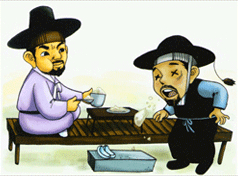

|  |
| 번호 | 6 |
|---|---|
| 분류 | 문화재와 역사 |
| 투어번호 | C0006 |
| 장소 | 안감천, 안감내 다리에 얽힌 옛날 이야기 |
| 주요설명 | 청백리의 표상 |
| 상세설명 | 지금은 서울 한가운데로 한강이 흐르고 있지만 예전 조선시대의 한양인 그 당시 서울 한가운데는 청계천이 흐르고 있었다. 청계천에는 그 당시만 해도 물이 맑아서 붕어나 피라미 등 물고기들이 떼를 지어 노닐었고 청계천 뚝방에는 실버들이 늘어져 한양의 수려한 산세와 어울려져 좋은 경치를 이루었다. 청계천으로 들어가는 작은 시냇물이 허다한데 그 중 하나가 북한산 줄기인 정릉에서 시작하여 지금의 성북동을 거쳐 안암동 용두동으로 내려오는 안암천(安岩川)이다. 한국전쟁이라 일컫는 6.25사변 전만 하더라고 안암동, 용두동, 제기동 사람들은 안암천 물에 빨래를 해 입었고 안암천변 모래톱에는 잿물에 빨아서 널어놓은 하얀 빨래가 눈이 부실 정도로 널려 있었다. 아이들은 여름날 안암천 물에 들어가 멱을 감기도 하고 물장구를 치면서 놀이터로 삼았다. 이 안암천의 원래 이름은 '안감내'라 불렀다. |